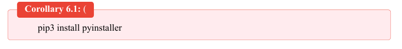
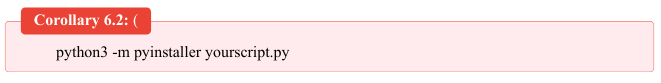
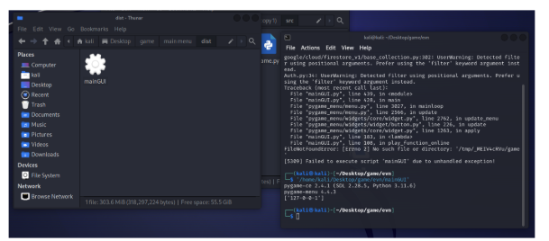
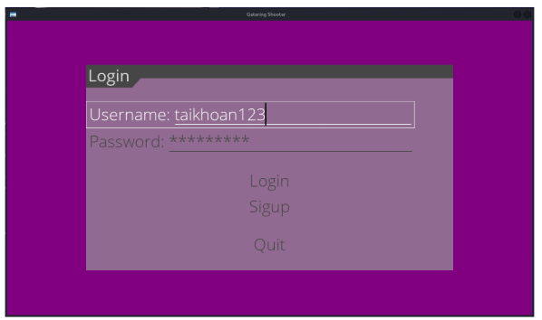
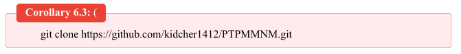
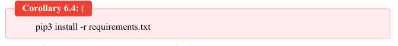
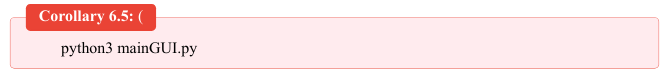

Thông tin
Trong bối cảnh phát triển công nghệ ngày càng mạnh mẽ, việc tạo ra các trò chơi trực tuyến là một
lĩnh vực hấp dẫn và phổ biến trong ngành công nghiệp game. Trong báo cáo này, chúng ta sẽ tìm hiểu
về quá trình phát triển một trò chơi bắn súng trực tuyến đơn giản trên môi trường mã nguồn mở Linux
(Ubuntu) bằng cách sử dụng thư viện Pygame và Socket.
Mục tiêu của dự án này là phát triển một trò chơi bắn súng online cơ bản, cho phép người chơi kết
nối và tương tác với nhau qua mạng Internet trên nền tảng Linux. Trò chơi sẽ được xây dựng với các
công nghệ mã nguồn mở, giúp tạo ra một môi trường phát triển linh hoạt và tiết kiệm chi phí.
West Gatering Shooter là một dự án đam mê được thực hiện bởi một nhóm 2 chung em, nham chia sẻ những trải nghiệm game sâu sắc.
Được thành lập vào 2/2024, Nhóm của chúng em nhằm mục đích kết hợp sự hứng thú của miền Tây hoang dã với cảm giác hồi hộp của trò chơi bắn súng nhanh nhạy. Với cam kết về chất lượng và sáng tạo, chúng tôi nỗ lực tạo ra những cuộc phiêu lưu đáng nhớ cho người chơi.
Nhóm của chúng tôi gồm 4 thành viên:
West Gatering Shooter là gì?
Game West Gatering Shooter là một trò chơi bắn súng đa người chơi đầy hấp dẫn được đặt trong miền hoang dã của miền Tây nước Mỹ.
Người chơi sẽ nhập vai vào một nhân vật cao bồi, một hình tượng mang trong mình sự mạnh mẽ, bản lĩnh và tính cách độc lập của miền Tây hoang dã. Cao bồi là biểu tượng của sự dũng cảm, sự bền bỉ và sự công bằng trong một thế giới đầy rủi ro và thách thức.
Trong game, người chơi sẽ phải đối mặt với những tình huống nguy hiểm, từ cuộc đấu súng trên đường phố đến cuộc săn bắn trong hoang mạc cằn cỗi. Họ sẽ phải sử dụng kỹ năng bắn súng, sự thông minh và kỹ thuật lừa đảo để chiến thắng trong môi trường khắc nghiệt của miền Tây.
Với đa dạng chien trường và một loạt các kỹ năng để nắm bắt, mỗi trận đấu đều mang lại trải nghiệm chiến thuật căng thẳng và kịch tính.
Cốt truyện
Sau cuộc nội chiến, Miền Tây Hoa Kỳ trở thành nơi trú ẩn cho những người tìm kiếm tự do, tài sản hoặc chỉ đơn giản là một cơ hội mới. Nhưng với cơ hội đến cũng đến với hỗn loạn, khi các phe phái cạnh tranh với nhau về đất đai, tài nguyên và quyền lực. Khi căng thẳng leo thang và sự căm phẫn nổi lên, miền Tây sắp đứng trước nguy cơ chiến tranh toàn diện.
Hướng dẫn cài đặt
1. Cài đặt bằng PyInstaller
Ta cần mở terminal của hệ thống Linux lên và thực hiện chạy lệnh sau:

2. Cài đặt bằng PyInstaller
2.1 Đóng gói ứng dụng bằng PyInstaller
Sau khi cài PyInstaller hoàn tất, ta tiến hành build ứng dụng:

Trong đó, yourscript.py là tên của tập tin Python mà bạn muốn chuyển đổi thành ứng dụng thực
thi.
Sau khi quá trình lệnh thực thi kết thúc, ta có một file thực thi mang tên yourscript trong thư mục
‘./disct/‘, ta có thể chạy file này ở các máy khác để khởi chạy game trên các máy linux khác.
Lợi Ích: Độc Lập Hệ Điều Hành: Ứng dụng thực thi được tạo ra bởi PyInstaller hoàn toàn độc
lập với hệ điều hành, cho phép chúng chạy trên nhiều nền tảng mà không cần cài đặt Python.
Bảo Mật:
Việc chuyển đổi mã nguồn Python thành ứng dụng thực thi có thể giúp bảo vệ mã nguồn khỏi việc bị
truy cập trái phép.
Ứng Dụng: Phát triển Ứng Dụng di động: PyInstaller có thể được sử dụng để build ứng dụng di
động từ mã nguồn Python để triển khai trên các thiết bị di động. Phân Phối Phần Mềm: PyInstaller
cung cấp một cách tiện lợi để phân phối phần mềm Python dưới dạng các ứng dụng thực thi độc lập.
2.2 Cài đặt và chạy file đã đóng gói bằng Pyinstaller
Sau khi đóng gói chương trình thực thi chính của game, ta có một file thực thi mang tên yourscript
trong thư mục ‘./disct/‘, ta có thể chạy file này ở các máy khác để khởi chạy game trên các máy linux
khác.

Ta chạy game bằng cách nhấp đúp vào file thực thi ấy để chạy game và ra được giao diện game:

3. Cài đặt và chạy trực tiếp thông qua Python
Ta mở terminal lên và thực hiện clone code game về máy:

Ta tiếp tục thực hiện lệnh trên terminal ấy để cài các thư viện python cần thiết cho game hoạt động:

Ta tiếp tục thực hiện lệnh trên terminal ấy để chạy game:

Lúc này, ta thấy giao diện game đã hiện ra và bắt đầu đăng nhập để chơi.